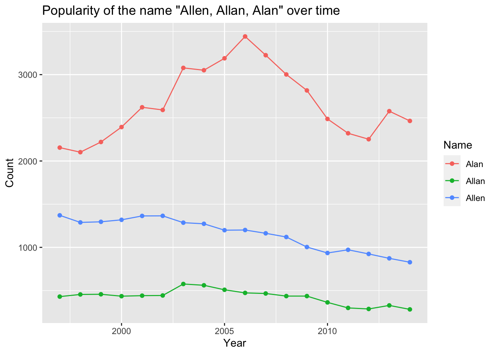

library(tidyverse)
names <- read_csv(here::here("supporting_artifacts",
"learning_targets",
"Lab 9",
"StateNames_A.csv"))Lab 9
Data Import and Packages
Part 1: Summarizing and Visualizing Allisons
Question 1
names <- names |>
mutate(Sex = Gender)
allisonname <- names |>
select(Name, Year, State, Count, Sex) |>
group_by(State, Sex) |>
filter(Name == "Allison") |>
summarize(Count = sum(Count), .groups = "keep") |>
pivot_wider(names_from = Sex, values_from = Count) |>
mutate(M = coalesce(M, 0))
allisonname# A tibble: 51 × 3
# Groups: State [51]
State F M
<chr> <dbl> <dbl>
1 AK 232 0
2 AL 1535 0
3 AR 1198 0
4 AZ 1880 0
5 CA 12413 0
6 CO 1594 0
7 CT 1099 0
8 DC 321 0
9 DE 294 0
10 FL 4455 0
# … with 41 more rowsQuestion 2
allisonname_F <- names |>
filter(Name == "Allison", Sex == "F")Question 3
allisonname_f_byYear <- allisonname_F |>
group_by(Year) |>
summarize(Count = sum(Count))
ggplot(data = allisonname_f_byYear, mapping = aes(x = Year, y = Count)) +
geom_point() +
geom_line() +
labs(title = 'Popularity of the name "Allison" over time')Part 2: Modeling the Number of Allisons
Question 4
Model1 <- allisonname_f_byYear |>
lm(Count ~ Year, data = _)Question 5
Model1 |>
ggplot(mapping = aes(y = Count, x = Year)) +
geom_point() +
stat_smooth(method = "lm")`geom_smooth()` using formula 'y ~ x'Question 6
lm(Count ~ Year, data = allisonname_f_byYear)
Call:
lm(formula = Count ~ Year, data = allisonname_f_byYear)
Coefficients:
(Intercept) Year
209689.8 -101.5 y-hat (estimated Count of Allisons) = 209,689.8 - 101.5 (Year)
Question 7
Model1 |>
broom::augment() |>
ggplot(mapping = aes(y = .resid, x = .fitted)) +
geom_point()In the plot of the residuals against the fitted values, we do not see any discernible pattern.
Question 8
Our model shows that the name Allison is declining in popularity. Allison is still quite popular as about 5000 newborn babies were given that name in our most recent year of data.
Part 3: Spelling by State
Question 1
names |>
filter(Sex == "M", Name %in% c("Allan", "Alan", "Allen")) |>
group_by(Year, Name) |>
summarize(Count = sum(Count)) |>
ggplot(mapping = aes(x = Year, y = Count, color = Name)) +
geom_point() +
geom_line() +
labs(title = 'Popularity of the name "Allen, Allan, Alan" over time')
Question 2
alan_name_M <- names |>
filter(Sex == "M", Name %in% c("Allan", "Alan", "Allen"),
Year == 2000, State %in% c("PA", "CA")) |>
pivot_wider(names_from = Name, values_from = Count) |>
select(State, Alan, Allen, Allan)
alan_name_M# A tibble: 2 × 4
State Alan Allen Allan
<chr> <dbl> <dbl> <dbl>
1 CA 579 176 131
2 PA 51 56 12Question 3
alan_name_M_per <- names |>
filter(Sex == "M", Name %in% c("Allan", "Alan", "Allen"),
Year == 2000, State %in% c("PA", "CA")) |>
group_by(State) |>
mutate(Count = Count/sum(Count)) |>
pivot_wider(names_from = Name, values_from = Count) |>
select(State, Alan, Allen, Allan)
alan_name_M_per# A tibble: 2 × 4
# Groups: State [2]
State Alan Allen Allan
<chr> <dbl> <dbl> <dbl>
1 CA 0.653 0.199 0.148
2 PA 0.429 0.471 0.101